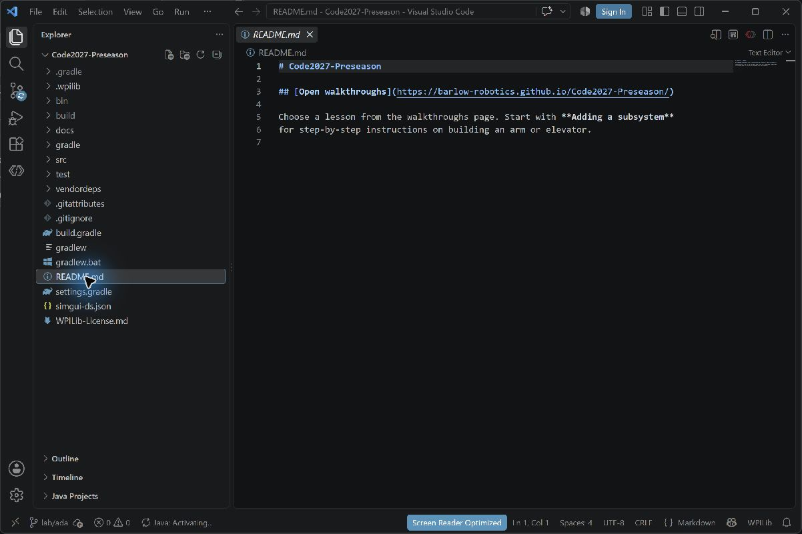

Setup
Get the saved starting code and make your own branch.
Download the lesson code and create a branch
Open the project
Open WPILib 2027 VS Code. Click File → Open Folder, select the folder named Code2027-Preseason, and click Select Folder. Remember to open the top-level folder.
Look at the file list on the left. You should see src and build.gradle inside Code2027-Preseason. This tells you the whole project is open.

Check out the lesson branch
A branch is a named version of the project. Mr. Leibs prepared walkthrough/1 with the TODOs for this lesson.
Keep this walkthrough open in your browser. The instructions inside the starting branch may be older.
- Open GitHub Desktop. Under Current Repository, select
Code2027-Preseason. - Save and commit any current work before switching branches.
- Click Fetch origin to download the list of branches.
- Click Current Branch. Search for
walkthrough/1and select it. - Check that Current Branch says
walkthrough/1. If you see Pull origin, click it.
Make your own working branch
- Open Current Branch → New Branch.
- Name it
lab/your-name-subsystem, using your own name. - Under Create branch based on…, choose
walkthrough/1. Click Create Branch.
Return to VS Code. Open src/main/java/first/robot/subsystems/Arm.java or Elevator.java. You should see numbered TODO comments.
Your edits belong on your working branch. Next, choose a mechanism and explore how its motor makes it move.